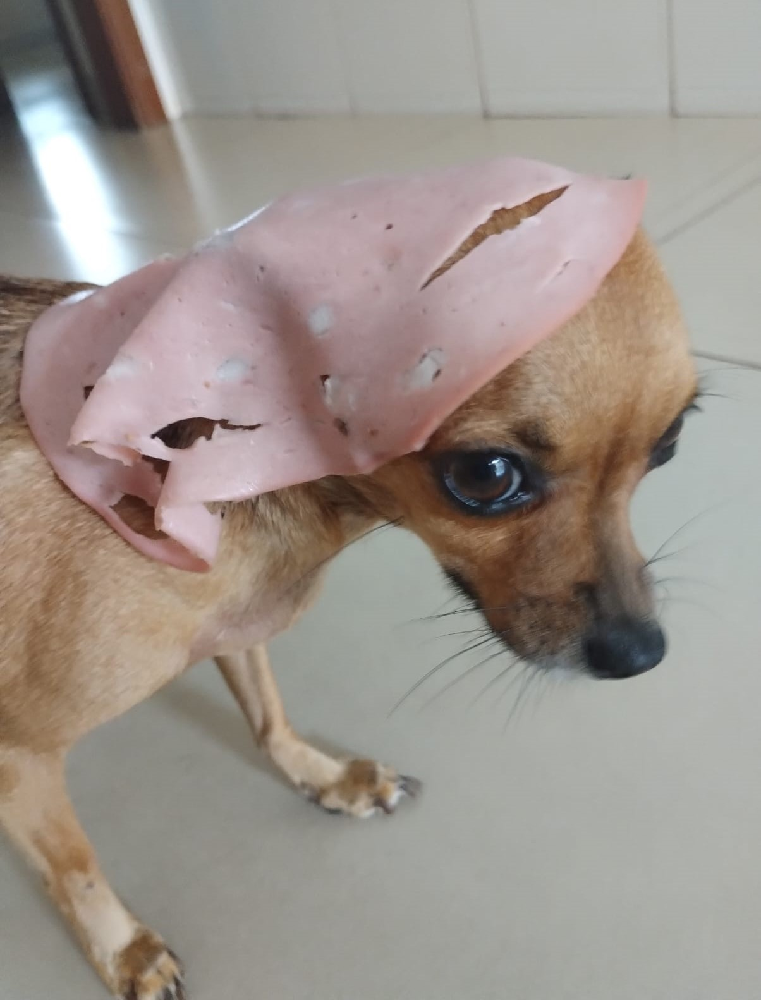
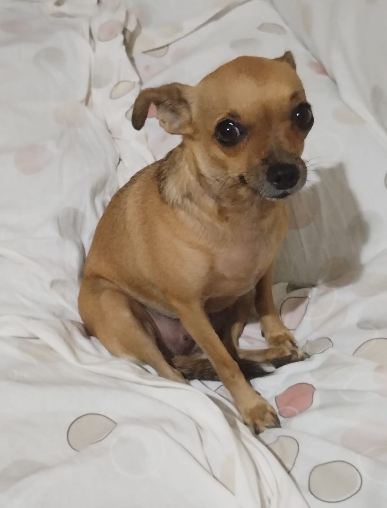

A Pipoca não entende quando alguém fala "passeio" ou "vamos passear". O que ela reconhece mesmo é o barulho da coleira.
É só pegar a coleira e ela já entende na hora que vai sair. Nem precisa chamar.
As coisinhas favoritas dela
A Pipoca pode estar dormindo no maior sono do mundo, mas é só aparecer alguma comida que ela acorda rapidinho. Ela é muito comilona e sempre quer saber o que todo mundo está comendo.
Ela gosta de várias coisas, mas essas são algumas das que ela mais ama:
Ela também ama carne, mas essa nem entra na lista porque gostar de carne já é praticamente obrigação de cachorro.

A Pipoca não entende quando alguém fala "passeio" ou "vamos passear". O que ela reconhece mesmo é o barulho da coleira.
É só pegar a coleira e ela já entende na hora que vai sair. Nem precisa chamar.
A Pipoca é muito persistente quando quer alguma coisa. Seja pedindo comida ou querendo subir na cama, ela não para até conseguir.
Quando alguém está cozinhando alguma coisa, ela fica por perto resmungando e encarando a pessoa. Às vezes ela começa a pular na perna, o que a gente costuma considerar como os "chutes" dela, e continua até conseguir atenção ou alguma coisinha.
Quando quer subir na cama, ela fica do lado me observando, resmungando e fazendo vários barulhinhos até eu colocar ela lá em cima.
De manhã é ainda pior. Às vezes ela mesma sai da cama e, pouco tempo depois, me acorda resmungando só pra eu pegar ela e colocar na cama de novo.
Mas eu acho que ela se faz um pouco. Quando era pequena, ela conseguia subir na minha cama sozinha, mas com o tempo parou de fazer isso. Eu achava que era porque troquei por uma cama mais alta, até que recentemente presenciei ela pulando na cama sozinha duas vezes. Em uma delas eu até chamei ela e ela simplesmente pulou e subiu normalmente.
Então fica a dúvida: ela realmente precisa de ajuda ou só está com preguiça e me fazendo de boba?
